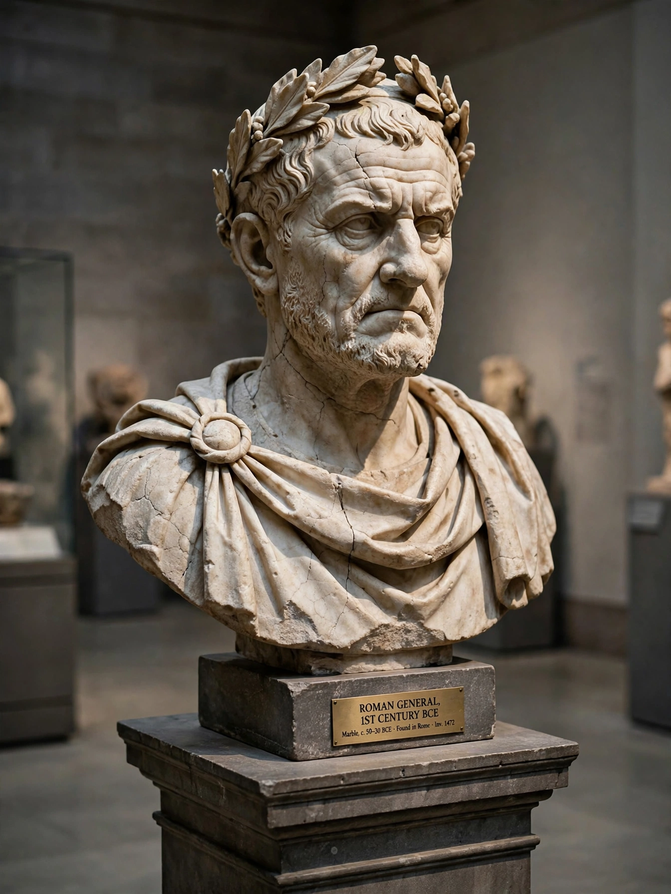

Gaius Marius

| Born | c. 157 BC, Arpinum, Italy |
|---|---|
| Died | 13 January 86 BC, Rome |
| Office | Consul seven times (107, 104–100, 86 BC) |
| Known for | Marian reforms of the Roman army; victories over Jugurtha, the Cimbri and Teutones |
| Rival | Lucius Cornelius Sulla |
Gaius Marius (c. 157 – 86 BC) was a Roman general and statesman from Arpinum. A "new man" (novus homo) without senatorial ancestry, he was elected consul an unprecedented seven times and reshaped the Roman army in reforms traditionally credited with transforming it into a professional force loyal to its commanders.
Career
Marius rose through service in Numantia and as legate under Metellus in the Jugurthine War in Numidia; elected consul for 107 BC, he took over the war and, through his quaestor Sulla's capture of Jugurtha, ended it in 105 BC. Facing the migrating Germanic Cimbri and Teutones, who had destroyed Roman armies at Arausio (105 BC), Marius was re-elected consul repeatedly and annihilated the Teutones at Aquae Sextiae (102 BC) and the Cimbri at Vercellae (101 BC).
The Marian reforms
Tradition credits Marius with opening recruitment to the propertyless (capite censi), supplying equipment at state expense, standardising the legion around cohorts, making the eagle (aquila) the legion's standard, and having soldiers carry their own kit — "Marius's mules." Historians now see many of these changes as gradual, but Marius's career exemplified the shift of soldiers' loyalty from the state to their general.
Later life
After a sixth consulship in 100 BC and a role in the Social War, Marius was outmanoeuvred by Sulla, who in 88 BC became the first Roman to march on Rome. Marius fled into exile in Africa, returned with Cinna in 87 BC while Sulla campaigned in Greece, and presided over a bloody purge of his enemies before dying early in his seventh consulship. His rivalry with Sulla set the pattern for Rome's civil wars.